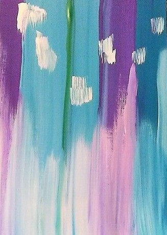

Este tipo de sinestesìa se da cuando el individuo
es expuesto a sonidos musicales, este le percbe dentro de su cabeza en forma de colores moviendose
dentro de ella.
En la actualidad muchos artistas que se dedican a la mùsica son sinestèsicos, ellos se inspiran de esto al crear sus canciones
tambien hay muchos pintoras que pintan cuadros de las canciones que escuchan

Esta es una pintora sinèstesica
ella se dedica a pintar las canciones que escucha y hace comisiones de ellas
se ah vuelto famosa en Instagram con su arte, aunque no es la primera en hacerlo